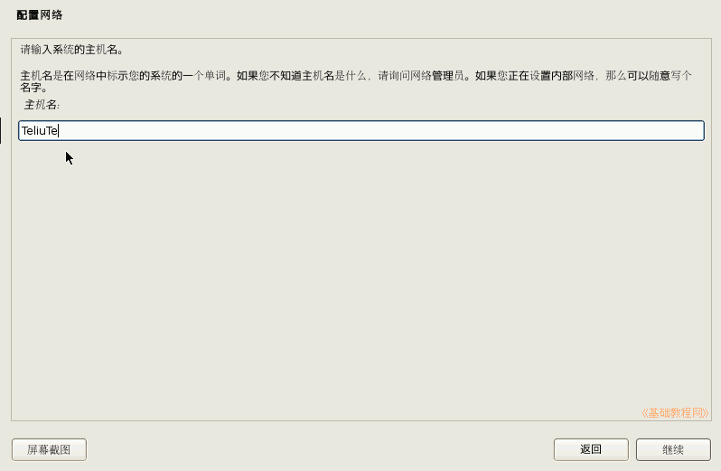
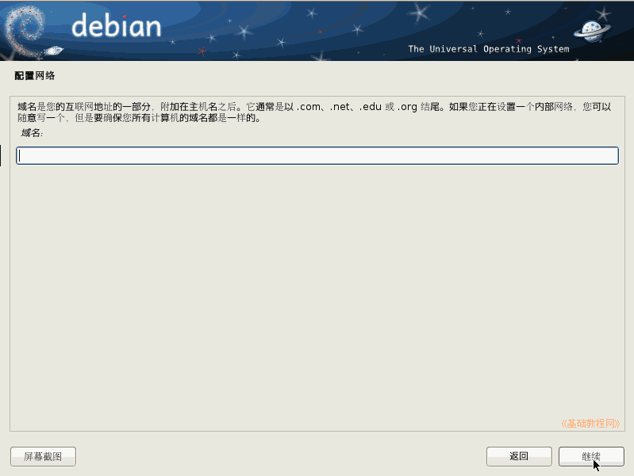
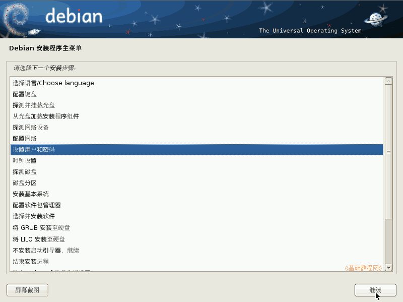
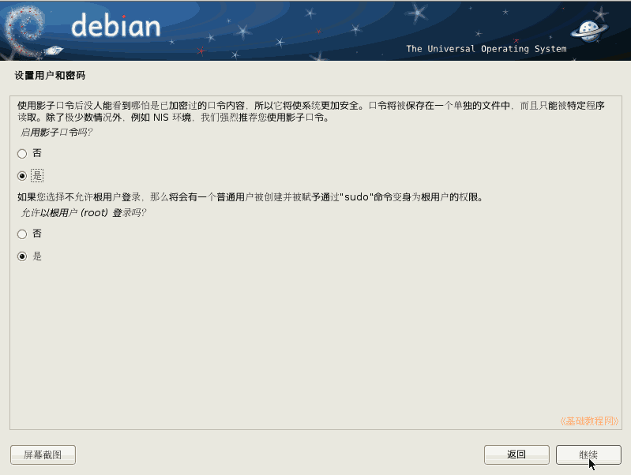
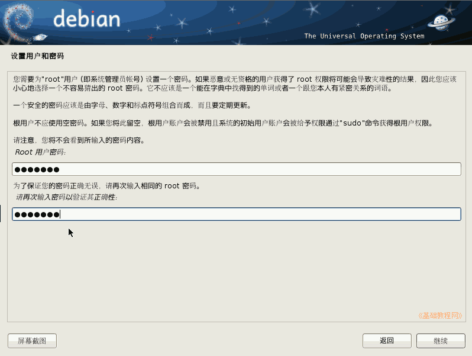
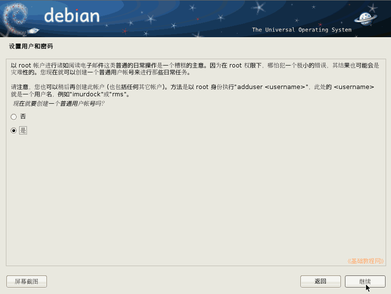
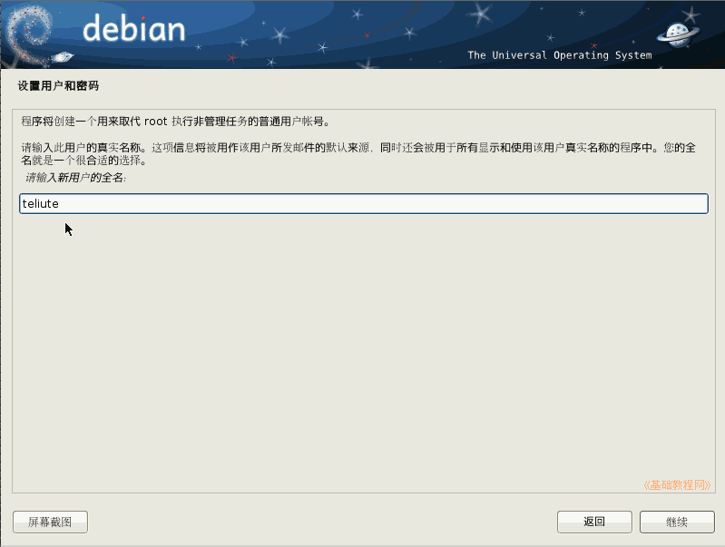
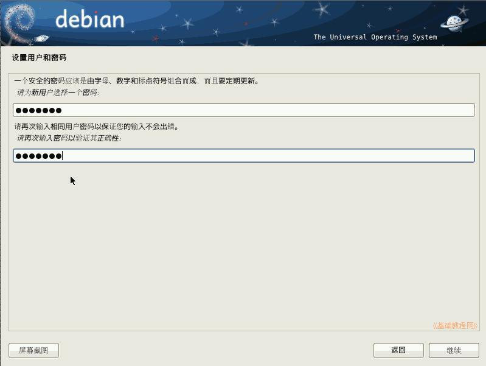

Debian 安装基础教程
作者：TeliuTe 来源：基础教程网
六、设置用户 返回目录 下一课系统中有一个管理员 root 用户，再创建一个普通用户；
1、设置主机名称
1）接下来设置主机名称，输入一个名称，点“继续”按钮；

2）接下来的域名，如果没有就留空，直接点继续；

3）在接下来的安装步骤中，点“继续”按钮；

4）在设置管理员用户面板中，直接点“继续”，允许管理员登录并加强密码安全；

5）接下来设定管理员密码，找个本子记下来，忘了可麻烦，输两遍相同的，然后点“继续”；

6）接下来是创建一个普通用户，平时登录用的，直接点“继续”按钮；

7）输入普通用户名，然后点“继续”按钮；

8）接下来设定普通用户密码，也在本子上记下来，输两遍相同的，然后点“继续”；

本节学习了设置用户的基础知识，如果你成功地完成了练习，请继续学习下一课内容；
本教程由86团学校TeliuTe制作|著作权所有
基础教程网：http://teliute.org/
美丽的校园……
转载和引用本站内容，请保留作者和本站链接。